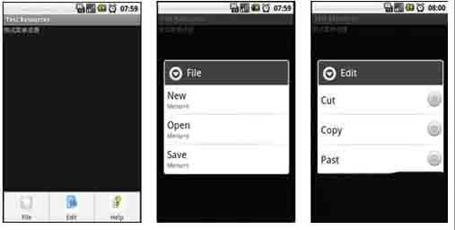

Android 基础菜单文件
任何视图组件的创建方式都有两种：一种通过在布局文件中声明创建；另一种通过在代码中创建。菜单也不例外，我们既可以在资源文件中声明，也可以在代码中创建。
Android中的菜单分为选项菜单、上下文菜单和子菜单，都可以在XML文件中声明定义，在代码中通过MenuInflater类使用。本节我们主要讲述如何使用菜单资源来声明创建菜单。
菜单资源文件的定义
菜单资源文件也是一个XML文件，该菜单文件位于工程的res\menu\my_menu.xml目录下。通过R.menu.my_menu的方式来引用。
典型菜单资源文件的结构是这样的：<menu>根元素，在<menu>根元素里面会嵌套<item>和<group>子元素，<item>元素中也可嵌套<menu>形成子菜单。
<menu>根元素没有属性，它包含<item>和<group>子元素。
<group>表示一个菜单组，相同的菜单组可以一起设置其属性，例如visible、enabled和checkable等。<group>元素的属性说明如下。
id：唯一标示该菜单组的引用id。menuCategory：对菜单进行分类，定义菜单的优先级，有效值为container、system、secondary和alternative。
orderInCategory：一个分类排序整数。
checkableBehavior：选择行为，单选、多选还是其他。有效值为none、all和single。
visible：是否可见，true或者false。
enabled：是否可用，true或者false。
<item>表示菜单项，包含在<menu>或<group>中的有效属性。
<item>元素的属性说明如下。
id：唯一标示菜单的ID引用。menuCategory：菜单分类。
orderInCategory：分类排序。
title：菜单标题字符串。
titleCondensed：浓缩标题，适合标题太长的时候使用。
icon：菜单的图标。
alphabeticShortcut：字符快捷键。
numericShortcut：数字快捷键。
checkable：是否可选。
checked：是否已经被选。
visible：是否可见。
enabled：是否可用。
下面还是通过一个实例来演示菜单资源的使用。本实例定义了一个文件系统的菜单信息，主菜单包括File、Edit和Help三个菜单项。File菜单有New、Open和Save子菜单项；Edit菜单有Cut、Copy和Paste子菜单项；Help菜单有About和Exit子菜单项。其中主菜单分别添加了图标。File子菜单带有快捷键，Edit子菜单采用单选按钮。Help子菜单可用响应单击事件，分别获得帮助和退出程序。
在工程的res\menu\目录下创建demo.xml菜单资源文件。
<?xml version="1.0" encoding="utf-8"?><menu xmlns:android="http://schemas.android.com/apk/res/android" >
<item
android:icon="@drawable/file
android:title="File">
<menu>
<group
android:id="@+id/noncheckable_group
android:checkableBehavior="none" >
<item
android:id="@+id/newFile
android:alphabeticShortcut="n
android:title="New"/>
<item
android:id="@+id/openFile
android:alphabeticShortcut="o
android:title="Open"/>
<item
android:id="@+id/saveFile
android:alphabeticShortcut="s
android:title="Save"/>
</group>
</menu>
</item>
<item
android:icon="@drawable/edit
android:title="Edit">
<menu>
<group
android:id="@+id/edit_group
android:checkableBehavior="single" >
<item
android:id="@+id/cut
android:title="Cut"/>
<item
android:id="@+id/copy
android:title="Copy"/>
<item
android:id="@+id/past
android:title="Past"/>
</group>
</menu>
</item>
<item
android:icon="@drawable/help
android:title="Help">
<menu>
<group android:id="@+id/help_group" >
<item
android:id="@+id/about
android:title="About"/>
<item
android:id="@+id/exit
android:title="Exit"/>
</group>
</menu>
</item>
</menu>
在工程res\layout\目录下创建一个test_menu.xml布局文件，在该文件中添加一个TextView视图组件用来显示一个提示信息。
<?xml version="1.0" encoding="utf-8"?><LinearLayout xmlns:android="http://schemas.android.com/apk/res/android
android:layout_width="fill_parent
android:layout_height="fill_parent
android:orientation="vertical" >
<TextView
android:id="@+id/menuTextView01
android:layout_width="wrap_content
android:layout_height="wrap_content
android:text="测试菜单资源" >
</TextView>
</LinearLayout>
在工程的eoe.demo.menu包中创建一个名为TestMenuActivity的Activity类。在该类的顶部声明MenuInflater类，在onCreate()方法中实例化该对象，用来加载菜单XML资源。
import android.app.Activity;import android.app.AlertDialog;
import android.content.DialogInterface;
import android.os.Bundle;
import android.view.Menu;
import android.view.MenuInflater;
import android.view.MenuItem;
import com.amaker.test.R;
public class TestMenuActivity extends Activity {
private MenuInflater mi;
@Override
public void onCreate(Bundle savedInstanceState) {
super.onCreate(savedInstanceState);
// 设置Activity界面的布局
setContentView(R.layout.test_menu);
// 实例化MenuInflater对象
mi = new MenuInflater(this);
}
}
覆盖Activity的onCreateOptionsMenu()方法，在其中创建菜单。
/* * 创建菜单 */public boolean onCreateOptionsMenu(Menu menu) {
// 调用MenuInflater的inflate方法，通过配置文件创建菜单
mi.inflate(R.menu.file_menu, menu);
return true;
}
覆盖Activity的onOptionsItemSelected()方法，响应菜单单击事件，当单击About时显示帮助，当单击Exit时退出程序。
public class Snippet { @Override
// 菜单项的单击事件
public boolean onOptionsItemSelected(MenuItem item) {
switch (item.getItemId()) {
// 显示关于对话框
case R.id.about:
aboutAlert("本实例演示的是如何使用XML菜单资源来定义菜单！");
break;
// 显示退出对话框
case R.id.exit:
exitAlert("真的要退出吗？");
break;
}
return true;
}
// 显示对话框
private void exitAlert(String msg){
// 实例化AlertDialog. Builder
AlertDialog.Builder builder = new AlertDialog.Builder(this);
// 设置显示信息
builder.setMessage(msg) .setCancelable(false)
// 确定按钮
.setPositiveButton("确定", newDialogInterface.OnClickListener() {
public void onClick(DialogInterface dialog, int id) {
// 结束Activity
finish();
}
// 取消按钮
}).setNegativeButton("取消", new DialogInterface.OnClickListener() {
public void onClick(DialogInterface dialog, int id) { return;}
});
// 创建对话框
AlertDialog alert = builder.create();
// 显示对话框
alert.show();
}
// 显示对话框
private void aboutAlert(String msg) {
// 实例化AlertDialog. Builder
AlertDialog.Builder builder = new AlertDialog.Builder(this);
// 设置显示信息 b
uilder.setMessage(msg).setCancelable(false)
// 设置确定按钮
.setPositiveButton("确定", new DialogInterface.OnClickListener() {
public void onClick(DialogInterface dialog, int id) {
}
});
// 创建对话框
AlertDialog alert = builder.create();
// 显示对话框
alert.show();
}
}
效果图：
